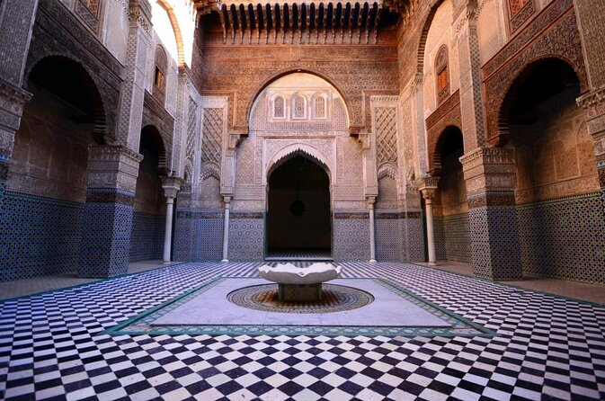

Kairaouine Mosque
Cette vieille mosquée qui date du 9e siècle reste très bien conservé. La mosquée n’est ouverte qu’aux musulmans pratiquants et aux étudiants, mais vous pouvez admirer les jolies cours à travers la grille extérieure. Une visite de l'extérieur est incluse dans la plupart de visites guidées de la médina de Fez.
Chouara Tannery
Avec des ouvriers infatigables et de grands bains de teinture, cette tannerie est une ruche d’activité. Placez-vous sur une terrasse du toit pour avoir une bonne vue, mais n’oubliez pas de vous munir de feuilles de menthe, car l’odeur est intense. Vous pouvez acheter des produits en cuir sur place.
Bab Mansour
La porte dite Bab el-Mansour a été achevée en 17322 par Moulay Abdallah, fils du sultan Moulay Ismaïl2. Elle marque l'entrée principale du palais impérial construit pour Moulay Ismaïl. La porte a été conçue par un chrétien converti à l'islam, d'où son nom : La porte de Mansour, le renégat2. Les colonnes de marbre qui ornent les bastions latéraux en saillie proviennent des ruines de Volubilis.
La porte monumentale de Bab-el-Mansour en 1931
Bab Mansour fait partie du patrimoine protégé de Meknès depuis 1914.
El Hedim Square
El Hedim Square is a famous square in Meknes, Morocco. The square was built in the years 1672-1674 after the Sultan of Morocco, Moulay Ismail, demolished half of the Old city of Meknes for his palace and the square. the Mansour Gate is in the front of the square.
Al-Attarine Madrasa
Une des grandes attractions de cette médersa est sa cour décorée en zelliges (carrelage marocain) avec des colonnes de marbre et des arches en bois sculptés. L’entrée est payante, mais l’intérieur, riche en histoire et en beauté, vaut absolument une visite. Visitez avec un guide touristique pour bien la trouver.
